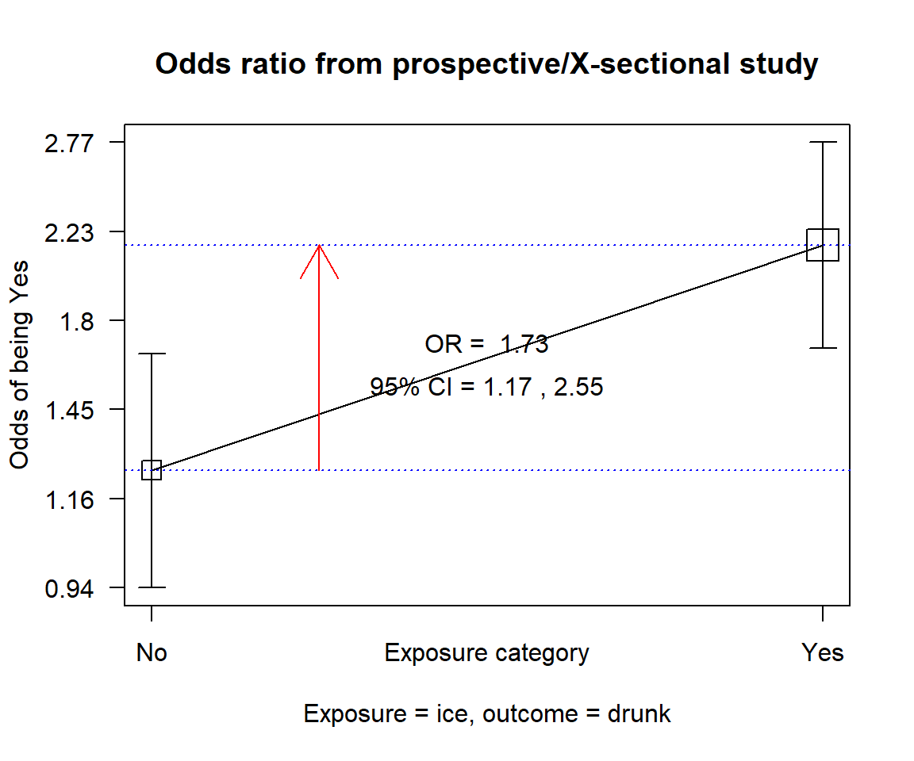
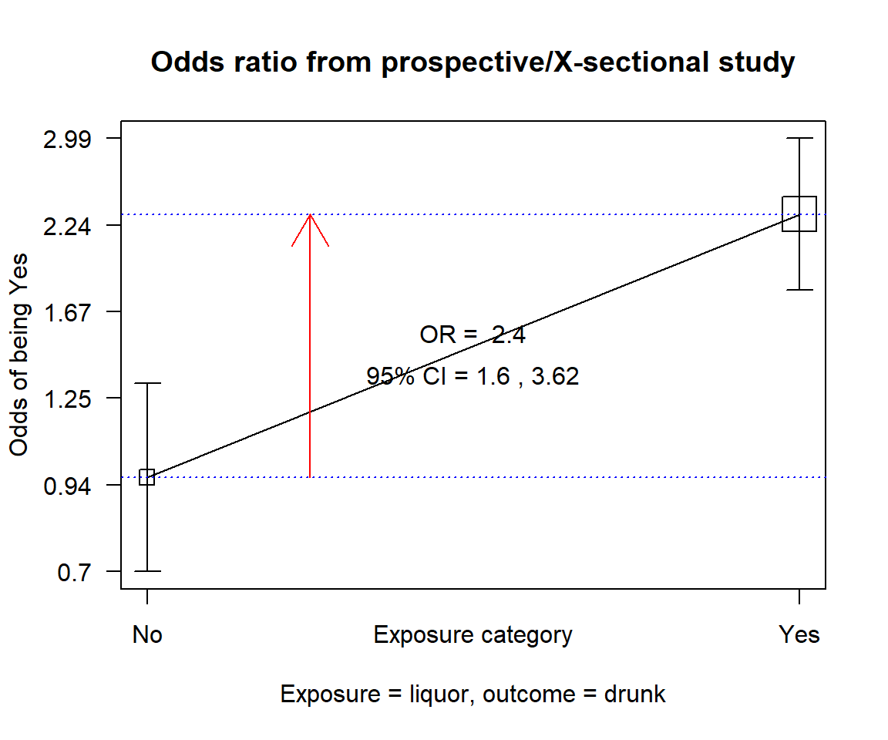
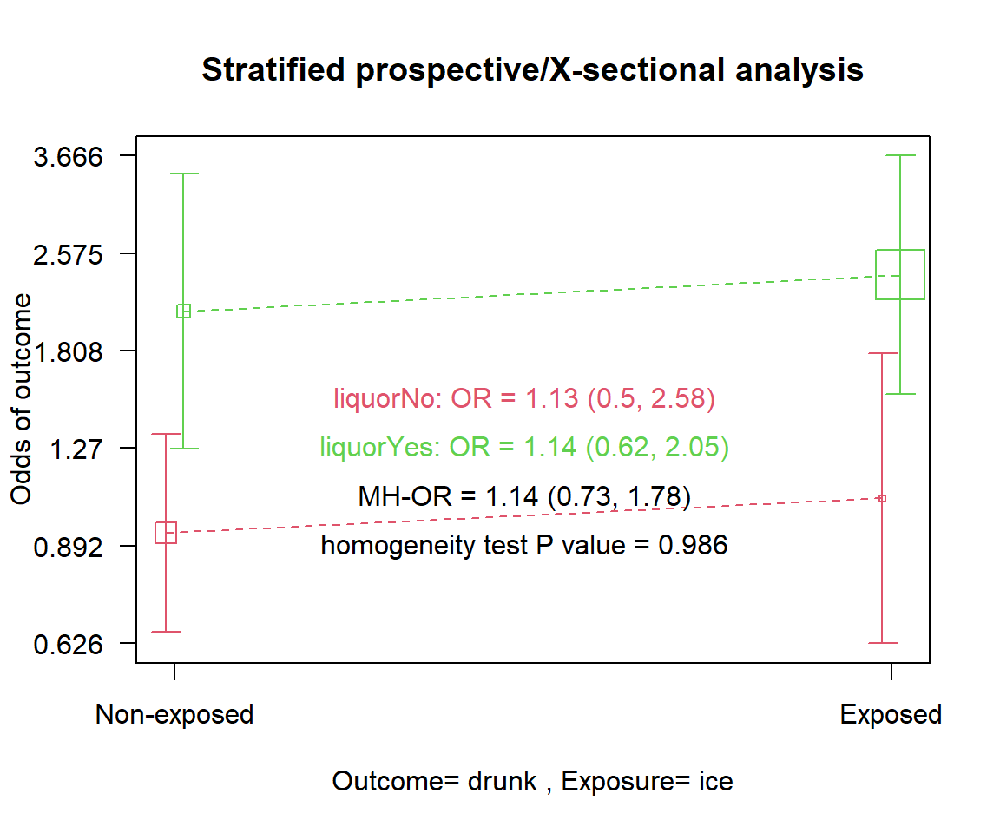
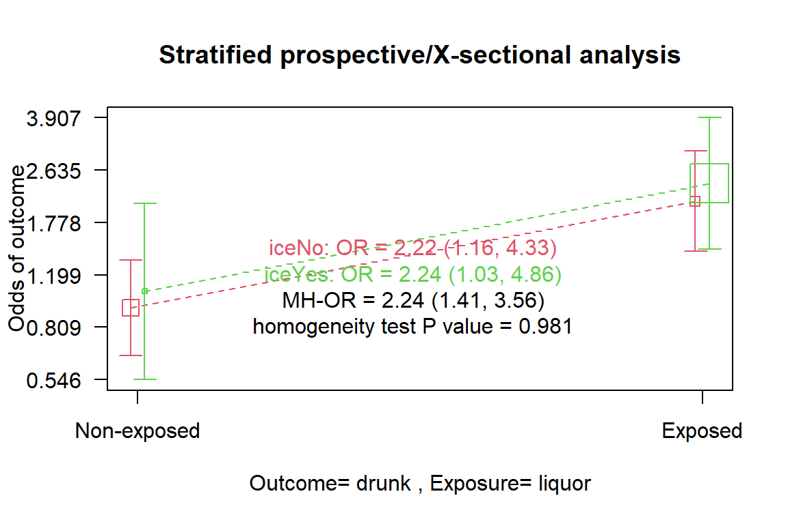

A new waiter employed in a bar to serve ice in glasses in Accra made an observation which seem irrational. He realized that customers who he served ice often ended up drunk. He is the first to accept this does not make sense but strongly believe he is right. He approached a friend who is a researcher and they both decided to investigate this. The friend decided to take data on 510 randomly selected customers. This data is recorded in drinks.txt.
The variables collected include id the sequentially allocated study id, sex, sex of the customer, liquor whether the customer took an alcoholic liquor (spirits, brandy, etc), ice whether the customer was served ice in a glass, drunk whether the customer ended up being drunk, food whether the customer was served food and age, age in years of the customer. The task now is to determine from the data if ingesting ice is associated with being drunk.
15.1.2 Effect and effect size
15.1.2.1 Effect
Before we begin to discuss the above problem we first look at what in statistical terms is meant by effect. The effect is defined as a change that occurs as a consequence of an action. In statistical terms, the effect is usually the change in one variable by another. For instance, the effect could be the mean change in blood pressure (effect) after taking a drug (the action). Two of the most common ways of expressing effect in categorical data analysis are the odds ratio (OR) and Relative Risk (RR). These two usually determine the effect by comparing the odds or risk in two groups and expressing the effect as the ratios.
15.1.2.2 Effect size
It does not only suffice to report the effect but also its size. People would want to know not only if an intervention makes a difference but also how much difference it makes. Effect size can be in the opposite direction. For instance, the difference between the blood pressure after taking a medication may be positive (when the pressure after taking the drug is more than before taking) or negative (when the pressure becomes less when the drug is taken). On the other hand, effects can be on the same side but with a difference in magnitude. An OR of 5.1 is much higher than 1.5 despite both indicating increased odds of having the outcome. We are going to apply this notion in determining confounders and effect modifiers.
Now back to the waiter’s issue. First, we read the data.
Data Frame Summary
df_drinks
Dimensions: 510 x 7
Duplicates: 0
---------------------------------------------------------------------------------------
No Variable Stats / Values Freqs (% of Valid) Valid Missing
---- ----------- --------------------------- --------------------- ---------- ---------
1 id Mean (sd) : 255.5 (147.4) 510 distinct values 510 0
[integer] min < med < max: (Integer sequence) (100.0%) (0.0%)
1 < 255.5 < 510
IQR (CV) : 254.5 (0.6)
2 sex 1. Female 256 (50.2%) 510 0
[factor] 2. Male 254 (49.8%) (100.0%) (0.0%)
3 liquor 1. No 155 (30.4%) 510 0
[factor] 2. Yes 355 (69.6%) (100.0%) (0.0%)
4 ice 1. No 191 (37.5%) 510 0
[factor] 2. Yes 319 (62.5%) (100.0%) (0.0%)
5 drunk 1. No 186 (36.5%) 510 0
[factor] 2. Yes 324 (63.5%) (100.0%) (0.0%)
6 age Mean (sd) : 35.8 (5.1) 31 distinct values 510 0
[integer] min < med < max: (100.0%) (0.0%)
19 < 36 < 51
IQR (CV) : 7 (0.1)
7 food 1. No 288 (56.5%) 510 0
[factor] 2. Yes 222 (43.5%) (100.0%) (0.0%)
---------------------------------------------------------------------------------------
Code
options(huxtable.knit_print_df =TRUE)
In this section, we make use of two main functions cc() and mhor() from the epicalc package. First, we determine the effect of having ice concerning being drunk by using the odds ratio.
Code
df_drinks %$% epiDisplay::cc(drunk, ice)

ice
drunk No Yes Total
No 85 101 186
Yes 106 218 324
Total 191 319 510
OR = 1.73
95% CI = 1.2, 2.51
Chi-squared = 8.5, 1 d.f., P value = 0.004
Fisher's exact test (2-sided) P value = 0.004
It appears the waiter is right! Taking ice is associated with significantly higher odds of getting drunk (OR: 1.73, 95% CI: 1.17 to 2.55, p<.001). This we all agree defies logic. The question then is: How did this arise?
15.1.3 Confounding
In research there often arises the situation where the observed effect of a variable tends to depend on another. For instance, in our case, the effect of ice on making customers drunk could be because it is associated with another item. If customers who took ice also took in some hard liquor at the same time this may make it seem that taking ice is associated with being drunk. This would be a typical case of confounding with the liquor ingestion confounding the effect of ice.
For a variable to be a confounder it must meet these basic properties
The confounder must be related to the exposure (ice) variable
The confounder must be related to the outcome (drunk) variable
The confounder should not be on the causal pathway between the exposure(ice) and outcome (drunk).
The first two conditions are easily tested statistically but the last can only be tested with prior knowledge, often coming from epidemiological and scientific facts. The investigator of the bar study suspects liquor to be a confounder to the effect of ice so sets out to determine this. First, he looks out for the relationship between the suspected confounder and the outcome
Code
df_drinks %$% epiDisplay::cc(drunk, liquor)

liquor
drunk No Yes Total
No 79 107 186
Yes 76 248 324
Total 155 355 510
OR = 2.41
95% CI = 1.63, 3.55
Chi-squared = 20.2, 1 d.f., P value = 0
Fisher's exact test (2-sided) P value = 0
Having liquor is strongly associated with being drunk with an OR = 2.41 (95%CI: 1.6, 3.62, p<.001). Next, we test the association between the exposure and the possible confounder.
liquor
ice No Yes Total
No 120 71 191
Yes 35 284 319
Total 155 355 510
OR = 13.71
95% CI = 8.68, 21.67
Chi-squared = 151.85, 1 d.f., P value = 0
Fisher's exact test (2-sided) P value = 0
There is a strong association between having ice and taking hard liquor (OR: 13.71, 95% CI: 8.48 to 22.33, p<.001). With this relationship established the first two conditions stated above have been fulfilled.
Our next task is to determine if the consumption of liquor is a confounder of the effect of ice. We do this by determining the adjusted OR and comparing it to the crude OR (unadjusted OR). We recall from above that the crude OR is 1.73 (95% CI = 1.17 to 2.55, p=0.004). The Mantel-Haenszel odd ratios determined by the mhor() function is an OR adjusted for the possible confounder. This is shown below
Stratified analysis by liquor
OR lower lim. upper lim. P value
liquor No 1.13 0.497 2.58 0.848
liquor Yes 1.14 0.621 2.05 0.666
M-H combined 1.14 0.726 1.78 0.574
M-H Chi2(1) = 0.32 , P value = 0.574
Homogeneity test, chi-squared 1 d.f. = 0 , P value = 0.986

The function first stratifies the odds of getting drunk after taking ice into the individual groups of the possible confounding variable. It then determines the OR for each level of the confounder, 1.14(95%CI= 0.621 to 2.05, p=0.666) for those who took liquor and 1.13 (95%CI: 0.497 to 2.58, p=0.848) for those who did not. It then reports the MH combined (adjusted) OR of 1.14 (95%CI: 0.726 to 1.78, p=0.574). Thus stratification or adjustment has reduced the OR or effect of ice from a significant 1.7 to a non-significant relationship 1.1. The effect has all but disappeared as ice is no longer significantly associated with getting drunk after adjustment. This shows that ice on its own does not cause people to be drunk and the observed effect was just an issue of confounding by the consumption of liquor.
Above we have shown the relationship between the three variables involved in demonstrating the confounding effect of liquor on the effect of taking ice. We can then ask: Is ice a confounder to the relationship between being drunk and consumption of liquor? Remember the crude OR for this effect is 2.41 (95%CI: 1.6, 3.62, p<.001). To answer the question we determine the adjusted OR below.
Stratified analysis by ice
OR lower lim. upper lim. P value
ice No 2.22 1.16 4.33 0.010714
ice Yes 2.24 1.03 4.86 0.032828
M-H combined 2.24 1.41 3.56 0.000589
M-H Chi2(1) = 11.81 , P value = 0.001
Homogeneity test, chi-squared 1 d.f. = 0 , P value = 0.981

The output shows that the adjusted OR (OR=2.24, 95%CI: 1.41 to 3.56, p<.001) is barely different from the crude OR and also retains its significant effect. The consumption of ice is therefore not a confounder to the effect of hard liquor.
In summary to determine if a variable is a confounder we need to determine its association with the exposure and outcome variable. If there is an association we then determine the crude effect and adjusted effect. If these two are significantly different then we can conclude the presence of a confounder.
However, the definition of “significant effect” is always difficult to determine. Some say a change in at least 10% of the crude effect can be considered enough. Whenever there is a possible confounder the adjusted effect should be reported. Also, it is worth noting that effect change could be making the effect higher or lower. A confounder that for instance results in a crude OR of 2.4 and an adjusted OR of 1.5 is a positive confounder while one that has a crude OR of 1.5 but an adjusted OR of 2.5 shows negative confounding.
15.1.4 Interaction or Effect modification
It is common knowledge among those who drink alcoholic beverages that filling your tummy with food often delays getting drunk when one consumes alcoholic beverages. The investigator of the bar data now wants to determine if this is so. If this notion is right then getting drunk after taking hard liquor should be dependent on whether the customer also ordered and ate some food as well. This is a typical example of effect modification (a term often used by epidemiologists) or interaction (used by statisticians). The two essentially means the same. By definition, effect modification occurs when the effect size of an exposure (liquor) on an outcome (drunk) differs depending on the level of a third variable (eating food). When this occurs just computing and reporting the overall effect is misleading.
We begin our investigation for food causing an interaction in the effect of drinking hard liquor by determining the OR of getting drunk when one took some food and when one didn’t.
liquor
drunk No Yes Total
No 47 60 107
Yes 41 74 115
Total 88 134 222
OR = 1.41
95% CI = 0.82, 2.43
Chi-squared = 1.59, 1 d.f., P value = 0.208
Fisher's exact test (2-sided) P value = 0.219
There is a statistically insignificant odds of getting drunk after taking hard liquor when one eats as well with an OR 1.41 (95% CI: 0.8 to 2.51, p=0.208). Next, we do the same for those who did not eat
liquor
drunk No Yes Total
No 32 47 79
Yes 35 174 209
Total 67 221 288
OR = 3.38
95% CI = 1.9, 6.03
Chi-squared = 18.13, 1 d.f., P value = 0
Fisher's exact test (2-sided) P value = 0
The OR of getting drunk if one takes liquor and on an empty stomach is much higher and statistically significant (OR: 3.38, 95% CI: 1.82 to 6.26, p<.001). We seem to have quite a substantial difference in the effect of drinking liquor depending on food intake or not. To be sure if this food intake is a significant effect modifier we subject this to a formal test using the mhor() function.
Stratified analysis by food
OR lower lim. upper lim. P value
food No 3.37 1.817 6.26 4.16e-05
food Yes 1.41 0.795 2.51 2.19e-01
M-H combined 2.08 1.406 3.09 1.78e-04
M-H Chi2(1) = 14.05 , P value = 0
Homogeneity test, chi-squared 1 d.f. = 4.65 , P value = 0.031
The stratified analysis output above shows our prior calculated stratified ORs as well as the combined Mantel-Haenszel OR. The Homogeneity test above tests the null hypothesis:
H0: There is no difference between the two stratified Odds ratios.
A p-value of 0.031, therefore, indicates a statistically significant difference in effects (OR) for those who ate and those who did not. We, therefore, conclude that there is significant interaction between food intake and getting drunk if one takes hard liquor.
In this section, we have dealt with detecting a confounder or interaction variable in categorical data analysis. This is just scratching the surface. In subsequent chapters, we would be dealing a lot more with these but using regression analysis.